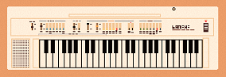
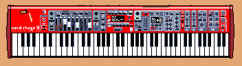
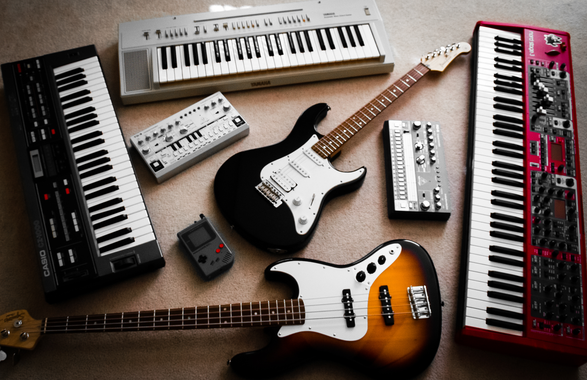

Home of TransistorBased

| GEAR NAME |
ACQUISITION YEAR |
COOLEST FEATURES |
| *Alesis Nitro kit |
2022 |
It's super easy to record with and has MIDI! |
| *Behringer RD-6 |
2021 |
The overdrive makes the drums all crispy |
| *Behringer TD-3 |
2021 |
This was a drunk purchase while at a Deadmau5 concert and it sounds amazing |
| *Casio CZ-1000 |
2022 |
It has amazing low end and can make some unique sounds |
| *Focusrite Scarlett 4i4 |
2021 |
It makes recording super easy and has a really high sample rate |
| *Nord Stage 3 |
2020 |
It's incredibly easy to dial in fantastic sounds and it feels amazing to play |
| *Squier CV 50's Stratocaster |
2022 |
It has a gorgeous aged look and it plays and sounds fantastic |
| *Squier CV 70's Jazz Bass |
2022 |
It looks and feels great, and has the iconic j-bass sound |
| *Yamaha PAC-112J |
2008 |
This was my first guitar :D |
| *Yamaha PS-20 |
2022 |
BEACH HOUSE!! |



Pixel art created by Pixel Notes Music